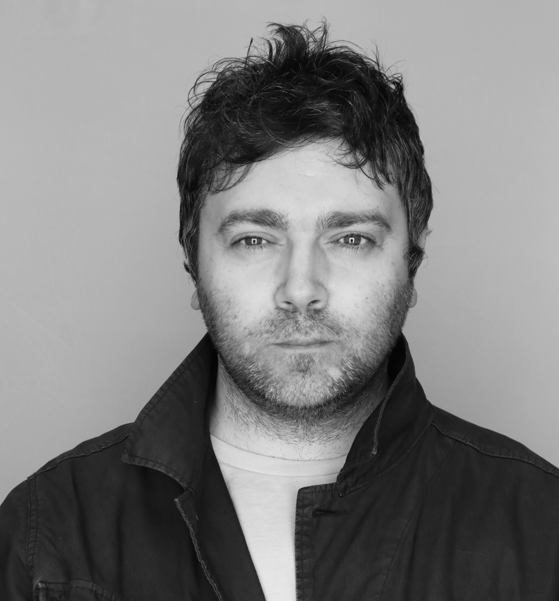

Fred Hutch -- Vaccine and Infectious Disease Division (VIDD)
University of Washington, Seattle, WA
Institute for Public Health Genetics (IPHG)
University of Washington, Seattle, WA
Cristian Øvadiuc
PhD Student | Genetics, University of Washington
[✓] MS Genetic Epidemiology, University of Washington
[✓] BS Microbiology, University of Washington
Email: {}
Affiliations:Fred Hutch -- Vaccine and Infectious Disease Division (VIDD)
University of Washington, Seattle, WA
Institute for Public Health Genetics (IPHG)
University of Washington, Seattle, WA
Introduction
2nd year PhD Public Health Genetics ( data science/ml option ) at the University of Washington, Seattle, WA.Completing PhD with the McCrone Lab , Bedford Lab and Nextstrain jointly mentored by Dr. JT McCrone and Dr. Trevor Bedford.**
Working at the nexus of computional virology + genomic epidemiology + AI/LLMs. For an overview of the field - see Trevor's terrific explanation →here Focusing on viral dynamics across biological scales from molecular to global phylodynamics linking within-host viral evolution to between-host viral dynamics to inform vaccines/MCMs, viral emergence and new fundamental virology. Also interested in AI-driven predictive models such as genomic Large Language Models (LLMs) to predict viral-host compatibility and enhance Nextstrain's real-time tracking of pathogen evolution. Engaging in high-level pandemic preparedness and response as part of Johns Hopkins Center for Health Security - Emerging Leaders in Biosecurity (ELBI) Class of 2024. I attended the 1st ELBI meeting in Washington DC →here with the White House --- Office of Pandemic Preparedness and Response Policy (OPPR) lead by Major General (ret) Paul Friedrichs. Prior, I formally trained as an epidemiologist holding a MS in Genetic Epidemiology and worked at the California Department of Public Health's Division of Communicable Disease Control in addition to completing a year-long field/applied epidemiology training program – UW Student Epidemic Action Leaders (SEAL) Team lead by Dr. Janet Baseman through the UW Dept. of Epidemiology. Some of my research experience includes roles at the UW Center for Emerging and Re-emerging Infectious Disease Research in the Hawn Lab, the UW Institute for Protein Design in the Baker Lab, the Institute for Health Metrics and Evaluation, and Harvard's Center for Communicable Disease Dynamics. **note: prior to joining current labs - completed PhD rotation at UW Genome Science & Brotman Baty Institute for Precision Medicine w/ Starita Lab and Stergachis Lab on NIH Grant 1R01HG013025-01; Conducted interviews and developed a needs assesment survey →see here
Recent News
- Passed PhD Preliminary Exam, June 2024
- Attended 1st ELBI meeting →link in DC at the White House --- Office of Pandemic Preparedness and Response (OPPR) led by Major General Paul Friedrichs
- Joined Johns Hopkins Center for Health Security - Emerging Leaders in Biosecurity (ELBI) Fellowship (Class of 2024)
- Started PhD in Genetics (data science/ml option) at the University of Washington, September 2023
- Graduated w/ MS Genetic Epidemiology; MS Thesis --- "Biological Signatures of Infectious Disease Resistance"
- Lectured @ Fred Hutch SeattleStatGROWS: Undergrad Biomedical Data Science Summer Research Program →slides here
- Joined Hawn Lab at the Center for Emerging/Reemerging Infectious Diseases (CERID) for my MS thesis
- Taught (TAed) for EPI 514 Application of Epidemiological Methods
- Joined UW Student Epidemic Action Leaders (SEAL) Team (Class of 2021-2022); year-long applied/field epidemiology training program focused on outbreak investigations and public health preparedness and response
- Started MS Genetic Epidemiology at the University of Washington, September 2021
Recent Talks (2021 - Present):
| June 2023 | Guest Lecturer at Fred Hutch SeattleStatGROWS: Undergrad Biomedical Data Science Research Program →slides here |
| July 2022 | Talk at California Department of Public Health - Division of Communicable Disease Control |
Recent Publications (2021 - Present):
Available from Dissertations & Theses @ University of Washington WCLP; ProQuest Dissertations & Theses Global 2023 Importance --- By identifying population outliers w/ rare human genetic mutations displaying infectious disease resistance, sequencing their genomes, and exploring the mechanisms behind their unique traits, this thesis shows an example of how we can discover new drug/vaccine targets focusing on adaptive and protective rare human genetic variation.